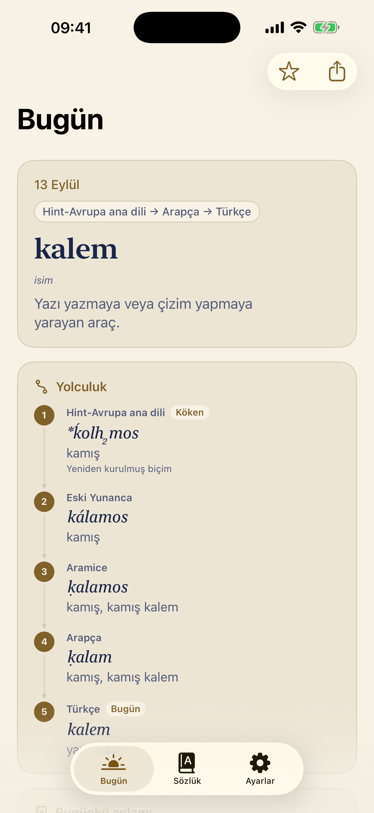
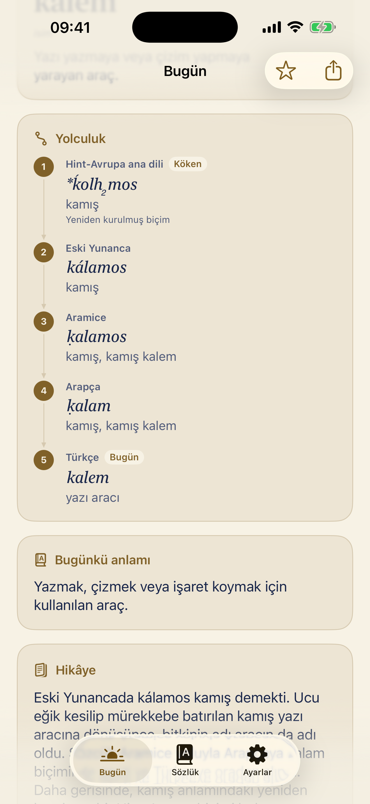
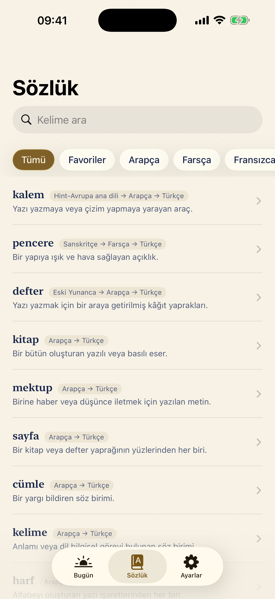
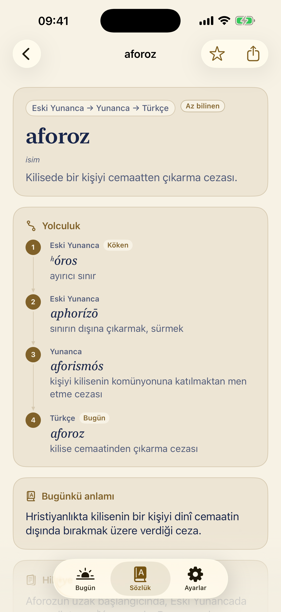
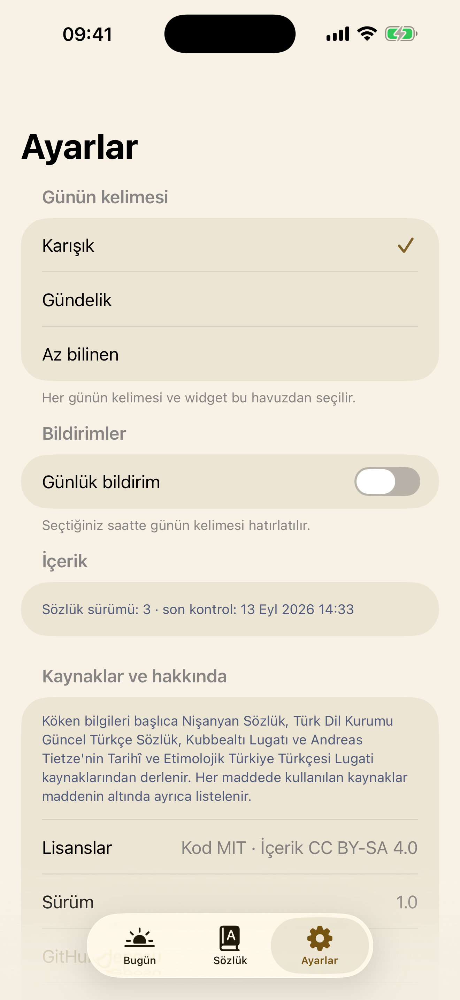

01 — Bugün
Bugün
Kökeni, yolculuğu, bugünkü anlamı.

02 — Yolculuk
Yolculuk
Kelimenin geçtiği her dili görün.

03 — Sözlük
Sözlük
Köken diline göre süzün, kaynağı görün.

04 — Az bilinen
Az bilinen
Günün kelimesi havuzunu değiştirin.

05 — Ayarlar
Ayarlar
Uygulamayı kendinize göre ayarlayın.
